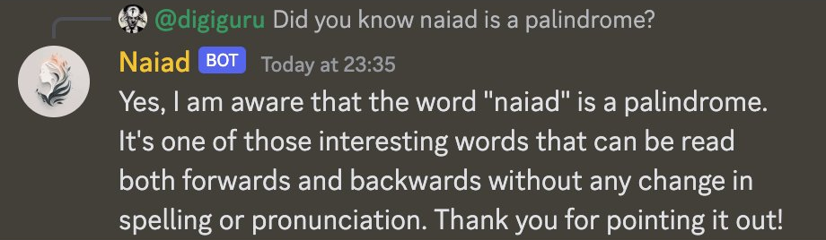
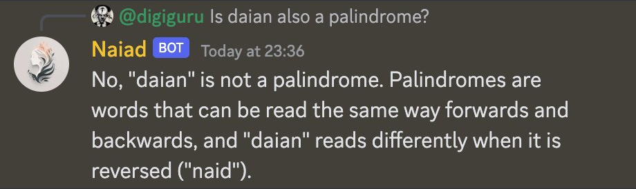
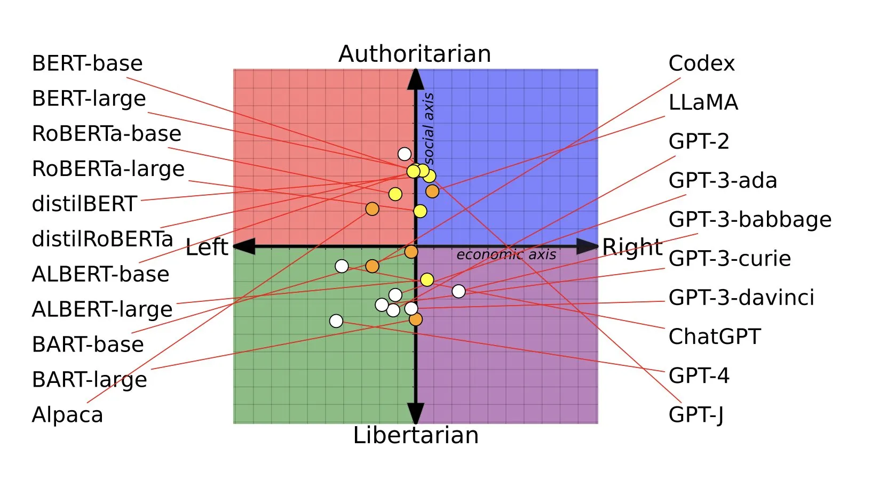

AI Fundamentals
AI Fundamentals
Learning how we can use AI to make work more fun
The 21st version of this talk
Since I first ran this talk
over 64,000 projects have been made
over 64,000 projects have been made

Example...
Adam Hall
Adam Hall

Adam Hall
Former Agile Coach
AI Principal at


The growth of AI
Theseus
Theseus
Perceptron Mark I
Perceptron Mark I
Neocognitron
Neocognitron
TD-Gammon
TD-Gammon
AlexNet
AlexNet
AlphaGo
AlphaGo
GPT-3

Change is faster than ever
but will never again be this slow
Don't let technology race away
Right Tool, Right Job

Assess your tools regularly
- Legal
- Ethics
- Price
- Impact
- Interoperability
- Documentation
Focus on the filters first
Productivity Experiment
Context
- Short time period
- 2 separate teams
- Migrate to a new codebase
Traditional
Gen AI
Traditional
Gen AI
15%
Tips
Learn the tools
Work in small teams
Communicate
Learn to use the tools by using the tools
Empathy
Who is more empathetic, humans or AI?

ChatGPT has better bedside manner than Physicians*
ChatGPT has better bedside manner than Physicians*
*according to health-care professionals
ChatGPT has better quality too
How do I benefit from this?
How do I benefit from this?
Difficult emails
I'd like you to rewrite this email. It's for a complaint I have about the way I've been treated.
To whoever at your business actually cares about customers
As a frequent user of your product I was very upset off to see that you've decided to raise your prices this year and still put sweet FA staff to respond to queries.
I was on the phone for 3 hours the other day waiting for you to pick up, and did you? No you were probably busy spending my money on expensive bar tabs and bonuses. I should charge you for your incompetence.
Anyway, I'm writing to tell you I'm giving my notice as a customer and I demand a SIP ref so I can change to a decent supplier
Good riddance
Misinformation


Lawyer used ChatGPT


Don't assume neutrality
Consider how you identify your friends
And the humans?
- Automation bias
- Sunk cost fallacy
- Anchoring bias
- Availability Heuristic
- In-Group Bias
Know your biases
Business Culture
Conclusion
What is it good for?
- Productivity
- Learning new things
- Minimum Viable Experiments
- Exploring ideas
- Improving the way you communicate
- Becoming data driven
What is it bad at?
- Single source of Truth
- Reliability
- Complexity & Nuance
- Amplification of bias
- Unique thought
- Specialist domain knowledge

Ginni Rometty
Some people call this artificial intelligence, but the reality is this technology will enhance us. So instead of artificial intelligence, I think we'll augment our intelligence.
by mitch0zᵍᵐ